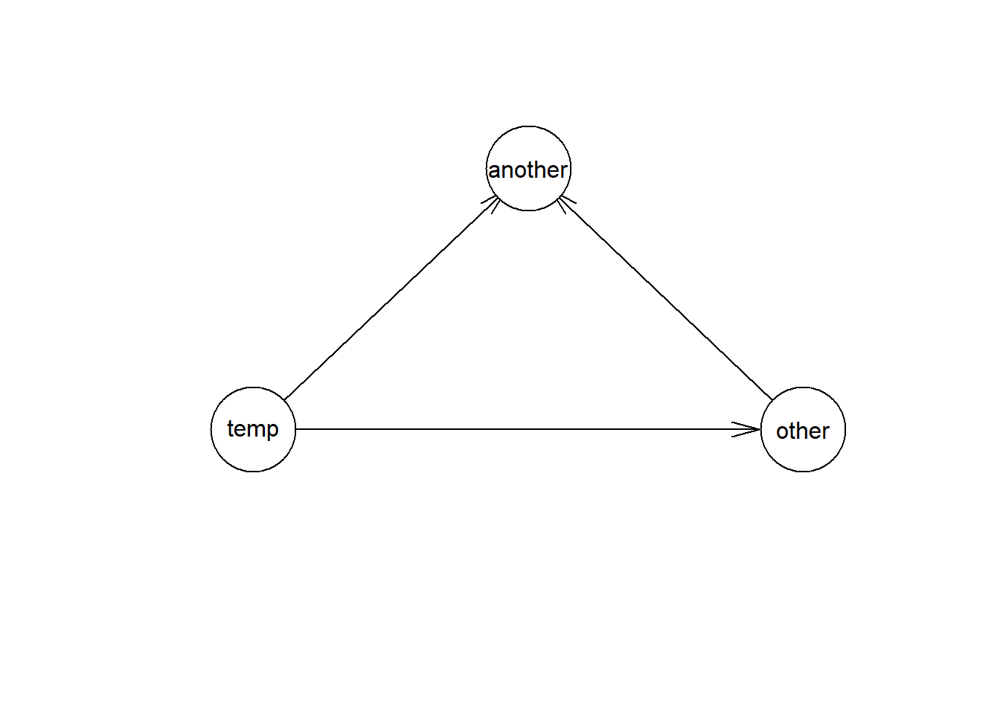
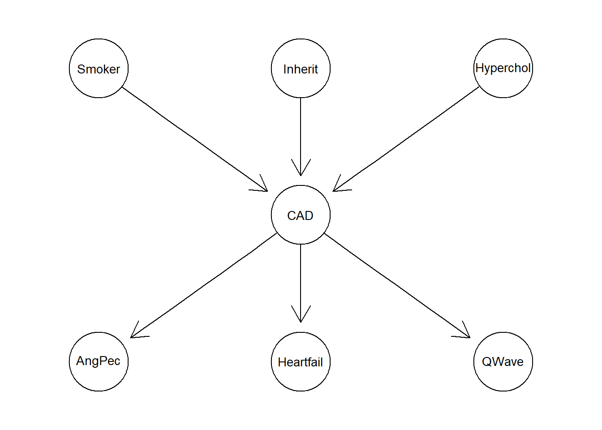

5.4 Bayesian temporal Nets
2020-05-2>6
5.4.1 backstage functions
from probability to rate
library(gRain)
rate <- function(p, t) {
out <- c(-log(1 - p) / t)
names(out) <- paste("Rate",t,"y",sep="")
out
}probability from one yearly time frame to another
complement
comp <- function(v){
out <- rep(v, each=2)
for (i in 2:length(out))
if (i %% 2 == 0)
out[i] <- 1 - out[i-1]
out
}HR
odds.p <- function(p) { p / (1 - p) }
p.odds <- function(odds) { odds / (1 + odds) }
surv.hr <- function(ref, hr) {ref ^ hr}
yn <- c("yes","no")
ny <- c("no","yes")create dependencies using RR, OR or HR
associate <- function(ref,
rr = NULL,
or = NULL,
hr = NULL) {
if(!is.null(rr)) {
prob <- ref * rr
} else if(!is.null(or)) {
prob <- p.odds((odds.p(ref) * or))
} else if(!is.null(hr)) {
prob <- 1 - ((1 - ref) ^ hr)
} else prob <- ref
if (length(which(prob > 1)) > 0) {
cat("Something went wrong... Prob > 1!\n")
return(NULL)
} else
return(c(prob, ref))
}add a static node
addStatic <- function(cptList,
nodeName,
nodeStates=yn,
nodeDependencies=NULL,
nodeStatesProb=0.5) {
if (!is.null(nodeDependencies) && !is.na(nodeDependencies)) {
deps <- paste(nodeDependencies,collapse="+")
form <- as.formula(paste("~",nodeName,"+",deps,sep=""))
} else
form <- as.formula(paste("~",nodeName,sep=""))
cptList[[length(cptList)+1]] <- cptable(form,
levels=nodeStates,
values=comp(nodeStatesProb))
names(cptList[[length(cptList)]]) <- nodeName
cptList
}add a temporal node
addNode <- function(cptList,
nodeName,
nodeStates=yn,
nodeDependencies=NULL,
nodeStatesProb=0.5,
nodeTemporal=FALSE,
nodeLeaps=NULL) {
if (nodeTemporal) {
transProb = prob(p = nodeStatesProb,
t.orig = nodeLeaps,
t.final = 1)
cptList <- addStatic(cptList = cptList, nodeName = paste(nodeName,"1",sep="."), nodeStates = nodeStates,
nodeDependencies = nodeDependencies, nodeStatesProb = transProb)
for (i in 2:nodeLeaps)
cptList <- addStatic(cptList = cptList, nodeName = paste(nodeName,i,sep="."), nodeStates = nodeStates,
nodeDependencies = c(nodeDependencies,paste(nodeName,i-1,sep=".")),
nodeStatesProb = c(rep(1,length(transProb)),transProb))
} else cptList <- addStatic(cptList = cptList, nodeName = nodeName, nodeStates = nodeStates,
nodeDependencies = nodeDependencies, nodeStatesProb = nodeStatesProb)
cptList
}5.4.2 building the model
add a static independent node
add a static dependent node
add a static doubly-dependent node
allCPT <- addStatic(allCPT, nodeName="another",
nodeDependencies=c("temp","other"),nodeStatesProb=c(0.4,0.7,0.3,0.5))
#### add a temporal independent node
#allCPT <- addNode(allCPT, nodeName="death", nodeDependencies=NULL,nodeStatesProb=c(0.2), nodeTemporal=TRUE, nodeLeaps=2)
#### add a temporal dependent node
#allCPT <- addNode(allCPT, nodeName="adjdeath", nodeDependencies="temp",nodeStatesProb=c(0.2,0.1), nodeTemporal=TRUE, nodeLeaps=2)
#### add a temporal dependent node (using OR)
#allCPT <- addNode(allCPT, nodeName="adjdeathOR", nodeDependencies="temp",nodeStatesProb=associate(ref=0.2, or=2), nodeTemporal=TRUE, nodeLeaps=10)
#### add a temporal dependent node (using RR)
#allCPT <- addNode(allCPT, nodeName="adjdeathRR", nodeDependencies="temp",nodeStatesProb=associate(ref=0.2, rr=2), nodeTemporal=TRUE, nodeLeaps=10)
#### add a temporal dependent node (using HR)
#allCPT <- addNode(allCPT, nodeName="adjdeathHR", nodeDependencies="temp",nodeStatesProb=associate(ref=0.2, hr=2), nodeTemporal=TRUE, nodeLeaps=10)compiling the network
## :: Compiling the network...## DONE ::plotting the network
## :: Plotting the network...## (3 nodes)
## Independence network: Compiled: TRUE Propagated: FALSE
## Nodes : chr [1:3] "temp" "other" "another"
## Number of cliques: 1
## Maximal clique size: 3
## Maximal state space in cliques: 8
## Independence network: Compiled: TRUE Propagated: FALSE
## Nodes: chr [1:3] "temp" "other" "another"## DONE ::plotting the network
## :: Storing the network...## png
## 2## DONE ::querying the network
## :: Querying the network...## other
## temp yes no
## yes 0.4 0.6
## no 0.7 0.3## other
## yes no
## 0.67 0.33## DONE ::setting evidence
## :: Setting evidence in the network...## DONE ::building from data
## :: Building from data| Sex | AngPec | AMI | QWave | QWavecode | STcode | STchange | SuffHeartF | Hypertrophi | Hyperchol | Smoker | Inherit | Heartfail | CAD |
|---|---|---|---|---|---|---|---|---|---|---|---|---|---|
| Male | None | NotCertain | No | Usable | Usable | No | No | No | No | No | No | No | No |
| Male | Atypical | NotCertain | No | Usable | Usable | No | No | No | No | No | No | No | No |
| Female | None | Definite | No | Usable | Usable | No | No | No | No | No | No | No | No |
| Male | None | NotCertain | No | Usable | Nonusable | No | No | No | No | No | No | No | No |
| Male | None | NotCertain | No | Usable | Nonusable | No | No | No | No | No | No | No | No |
| Male | None | NotCertain | No | Usable | Nonusable | No | No | No | No | No | No | No | No |
dag.cad <- dag(~ CAD:Smoker:Inherit:Hyperchol +
AngPec:CAD +
Heartfail:CAD +
QWave:CAD)
plot(dag.cad)
bn.cad <- grain(dag.cad, data = cad1, smooth = 0.1)
print(querygrain(bn.cad, nodes=c("CAD", "Smoker"), type="conditional"))## CAD
## Smoker No Yes
## No 0.7172084 0.2827916
## Yes 0.4933771 0.5066229## DONE ::